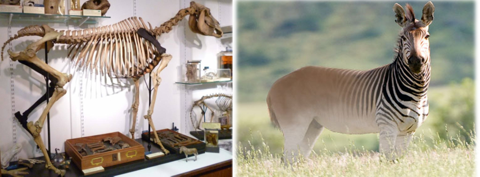

Animais Extintos
O que são?
Animais extintos, são animais q viveram no nosso planeta terra, mas que não estão mais nele, que por motivos de ambiente ou evolução acabaram morrendo ou deixaram de existir no planeta. A espécie só é considerada extinta quando o último dela morre.
Tipos de extinção
Atualmente podemos saber que uma expécie esta extinta de duas formas, que são:
Extinção Filédica:
Uma espécie desaparece dando origem a outra mais evoluída. A espécie inicial (ancestral) se considera extinta, mas a sua linhagem permanece. Não ocorre um aumento ou redução da diversidade.
Extinção em massa:
A extinção em massa se caracteriza pelo decréscimo da biodiversidade através da extinção excepcionalmente alta de vários grupos de seres vivos. Em cerca de 4,5 bilhões de anos de existência, o planeta Terra passou pelo menos por cinco grandes extinções em massa.
Animais extintos
Unicórnio-da-Sibéria (Elasmotherium Sibericum)
Esqueleto e ilustração de um unicórnio-da-sibériaO Elasmotherium sibiricum, unicórnio siberiano ou rinoceronte-de-chifre-grande foi um animal pré-histórico que viveu há 200 mil anos durante o Pleistoceno. Era um parente próximo dos atuais rinocerontes porém era três vezes maior, seu chifre podia chegar a quase 2 metros de comprimento. Elasmotherium sibericum compartilhou a Terra com os primeiros humanos modernos até cerca de 39 mil anos atrás. Pesando impressionantes quatro toneladas, a espécie era conhecida por seu único e extraordinário chifre no meio da testa. Por esse motivo, também é popularmente conhecido como "unicórnio siberiano". O rinoceronte gigante pode ser uma das origens do mito por trás do animal. Mas sua existência é muito mais importante que isso, afinal, pesquisadores buscam o entender para ajudar na preservação de rinocerontes que ainda estão vivos.
Tigre-dente-de-sabre (Smilodon)
Esqueleto e ilustração de um unicórnio-da-sibériaSmilodon populator(Tigre dente de sabre) foi o felino mais pesado que já existiu, e possivelmente o maior, podendo variar de 250 até 300 quilos, com uma massa máxima de 320 quilos, possuindo de 3,50 metros à 450 metros, era um enorme tigre. Esqueleto de Smilodon fatalis no Museu Nacional de Ciência do Japão, Tóquio, Japão. Existiram três espécies, duas que habitaram a América do Norte, Smilodon gracilis e Smilodon fatalis, e uma, a maior de todas, Smilodon populator, que viveu na América do Sul, inclusive aqui no Brasil. O Tigre Dentes de Sabre Sul Americano (Smilodon populator) cujo nome faz referência aos enormes dentes de 28 centímetros de comprimento que mais pareciam facas de cortar carne em formato curvo. Viveu há aproximadamente 1,0 milhões a 10 mil anos atrás durante o Pleistoceno na América do Sul.
Dodô (Raphus cucullatus)
Esqueleto e ilustração de um unicórnio-da-sibériaOs dodôs, Raphus cucullatus, eram aves endêmicas das Ilhas Maurícias (Oceano Índico), desprovidos de predadores naturais. Com testa e rosto pelados, bico em forma de garra e patas robustas, possuíam tamanho relativamente grande (50 cm), e hábito não voador. Quando e por que os dodôs foram extintos? A falta de predadores naturais, tornou os dodôs bastante vulneráveis a presença humana, quando os colonos europeus chegaram à Maurício no século 17. Sem reconhecer os humanos como ameaça, os dodôs eram facilmente capturados. Apesar do seu último avistado ter sido feito em 1662, as estatísticas apontam que provavelmente eles viveram até 1690. Agora, a desextinção do dodô é o principal objetivo do Grupo Genômica Aviaria da Colossal Biosciences, que aponta que a parceria com a Fundação Mauritian Wildlife é um passo importante no processo.
Mamute (Mammuthus)
Esqueleto e ilustração de um unicórnio-da-sibériaOs mamutes eram animais mamíferos pré-históricos que não existem mais em função de sua extinção que ocorreu há, aproximadamente, 4000 anos. Faziam parte da mesma família dos elefantes.. Os mamutes se originaram na África há pelo menos 5 milhões de anos no plioceno, sendo a primeira espécie o Mamute-Sul-Africano, pesava de 6 a 9 toneladas, tinha de 3 a 4 metros de altura e seu habitat se estendia desde a África do Sul ao Quênia, depois dando origem a outras duas espécies africanas, o Mamute-Africano. A extinção dos mamutes e de outros grandes mamíferos há mais de 15 mil anos pode ser explicada pelo mesmo tipo de efeito cascata no ecossistema que tem sido observado atualmente, com a morte em massa de predadores como lobos, pumas e tubarões.
Quagga (Equus quagga quagga)
 Esqueleto e ilustração de um unicórnio-da-sibériaFoi extinto da natureza no século dezenove, na década de setenta. A grande procura pela sua carne e pele pelos colonos Boer, resultando na sua caça indiscriminada; e um plano de extermínio de animais selvagens, a fim de garantir espaço e alimento para bovinos, foram os fatores cruciais para seu fim. Somente um quaga foi fotografado vivo: uma fêmea que vivia no Zoológico de Londres. São conhecidas cinco fotografias deste indivíduo, todas tiradas entre 1863 e 1870. Atualmente, existem 23 espécimes de quaga empalhados em museus pelo mundo. Além destes, restaram uma cabeça e pescoço montados, um pé, sete esqueletos completos e amostras de vários tecidos.
Urso-de-cara-achatada (Arctodus simus)
Esqueleto e ilustração de um unicórnio-da-sibériaO Arctodus ou urso-de-pernas-longas ou ainda urso-de-cara-achatada é um urso que viveu entre 800 000 e 12 500 anos atrás durante o Pleistoceno na América do Sul e do Norte. Era mais alto (podendo atingir 3,5 m de altura em pé), mais magro, mais pesado e mais ágil que os maiores ursos pardos dos dias atuais como o Urso-de-kodiak, tornando-se mais rápido e mais letal que o seu primo atual. Seu crânio demonstra um modo de vida extremamente carnívoro, com molares especializados em cortar carne, focinho curto com musculatura poderosa e dentes caninos grandes, resultando em uma mordida mortal. A distância entre os olhos era larga e frontal, com uma grande cavidade ocular, resultando em uma excelente visão a qual podia ser amplificada ao ficar em pé, seu peso é estimado em máximas, dos 700 kg a 1.1 toneladas, para o maior deles, Arctodus Simus. Esses fatores, juntamente com suas pernas longas, as quais eram responsáveis por sua grande agilidade e velocidade, o tornavam um ótimo caçador de longas distâncias, estando apto a perseguir tanto animais pequenos e rápidos como grandes e lentos.
Tigre-da-tasmania (Thylacinus cynocephalus)
Esqueleto e ilustração de um unicórnio-da-sibériaO Thylacinus cynocephalus, também chamado de Tilacino ou Lobo-da-Tasmânia, foi extinto nos anos de 1930, e pode se tornar a primeira espécie animal a ser trazida de volta à vida. O feito foi reportado na última semana, em estudo publicado no periódico Genome Research. .A caça indiscriminada levou à extinção não só dos tilacinos, mas também da famosa megafauna australiana. Posteriormente, os dingos (um tipo de cão selvagem) foram levados ao continente. As duas espécies competiam pelos mesmos recursos, o que fez a população dos tilacinos diminuir ainda mais. Há 86 anos, morria o último tigre-da-tasmânia do planeta. Conhecido como Benjamin, o animal faleceu no zoológico de Beumaris, em Hobart, na Austrália, em 7 de setembro de 1936.